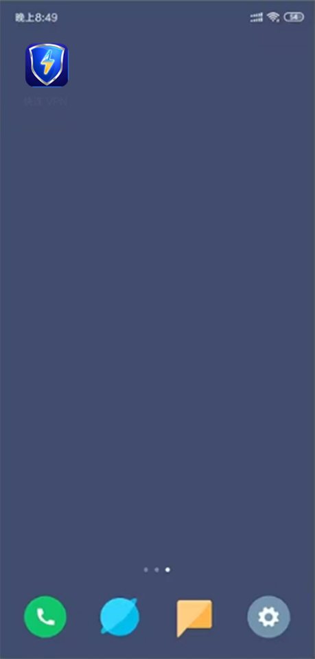
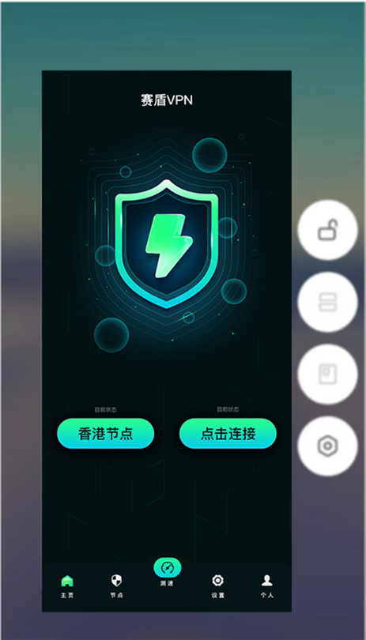
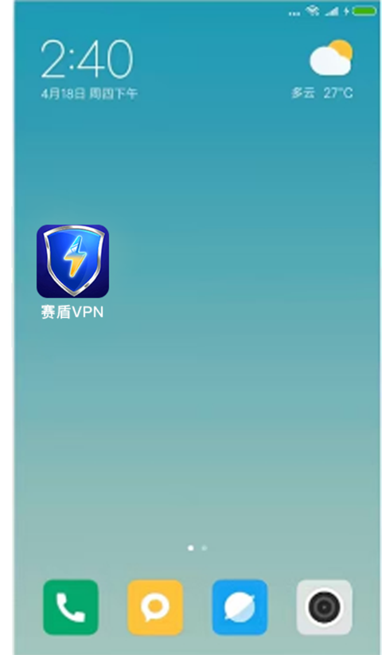

返回
欢迎查看常见问题
智慧服务，让您使用更简单

小米手机如何关闭杀后台让赛盾 VPN 稳定运行
按照这篇文章的介绍，能让您的小米手机上赛盾VPN 使用飞起来
小米手机 MIU“杀后台”是比较严重的厂商，这种问题会导致您使用 赛盾VPN 的过程中 VPN 经常中断。通过下面的设定步骤，您将获得一个稳定运行 赛盾VPN 的环境，让您的使用感受爽起来。
若您是其他厂商的手机，请您参考《每隔几分钟就不好用了，赛盾 VPN 太不稳定了?》文章的说明。
在小米 MIU!中我们需要完成下面两项设定:
设定赛盾 VPN 的“省电策略”为“不限制”模式
在“最近任务界面”中，将赛盾VPN的 App 锁定:
设定“省电策略”为“不限制”模式
MIUI9 、10 设定“省电策略”为“不限制”模式

MIUI11、12 稳定版本您可以根据以下步骤操作:
1【设置】→【电池与性能】→【右上角设置图标】->【应用智能省电】→ 找到应用→ 选择「无限制」。
2.【手機管家】→【安全中心】→【右上角設置圖標】→【優化加速】→【鎖定任務】→> 开启 赛盾VPN 选项。
锁定赛盾 VPN App
而对于锁定 App 在 MIUI9 和 MIU10 中有所不同，我们单独进行说明。
在 MIUI10-12 中您需要在最近任务列表中，长按赛盾VPN App，在弹出的菜单中选择锁定我们。
在 MIUI13 中您需要在最近任务界面，长按赛盾应用，就会显示上锁的图标了(如图下)。

在 MIUI9 中您需要在最近任务列表中，下拉一下 赛盾VPN App 锁定我们。

近期发现小米手机自带的游戏加速功能也会导致 VPN 频繁掉线，您需要按照下面步骤将其关闭，以保证 VPN 稳定运行:
打开手机设置，点击特色功能选项:
然后直接点击游戏加速;
打开后点击右上角的设置按钮:
然后直接将游戏加速右侧的按钮关闭即可
注:若您在下载和使用过程中有任何问题，您随时可以发送邮件给 {{kfEmail}}，将由专业的客户服务人员帮助您获取到最新版本的软件。